Ave'iromi Zūxjemi Nūzuganka- "Apeiron Militarized Peacekeepers" - the commando's full name
In the early days of Apeiron, Volnexar's military forces formed the VMS, a small elite commando to assist urban police forces in law enforcement. As their arsenal got even better with every new technological breakthrough, they slowly gained more and more power, influence, and reputation, eventually becoming what we know of the AZN: a commando of heartless juggernauts of carbon fiber who will go to the most brutal lengths to restore peace and order to the most FUBAR of situations.
History
After the success of the federation's response against the MDS Invasion in 139 PC, and the foundation of the small city of Volnexar in 146 PC, the town's militarized garrison started a slow reconversion from warding against external threats to protecting the Federation against itself. To this purpose was founded the VMS, a militarized division of Volnexar's urban police forces. Under the leadership of Security General Blackskull, and assisted by the Federation's industry with high-end arsenal and the world's very first cybertech, they quickly got themselves a reputation within Volnexar as "the guys we call when things go wrong".
As years went by, the VMS slowly started expanding to Apeiron's other cities, to provide their security services to the more sensitive areas. They eventually became a governmental institution, known under the modern moniker AZN. To ensure they always have superiority over the people no matter what, a few corporations, notably Kevell Arsenal Co., have a very strict policy: whenever a new weapon, armory, or cybertech product is complete and ready for launch, it is first and foremost supplied to the AZN, then is released on the global market some three to six months later, to ensure the commando is always one step ahead of everything else.
Activities
The AZN's ranks are mostly made up of men, as height and weight are critical job requirements to ensure all soldiers have a satisfyingly impressive stature. They are terrible, reckless and unstoppable soldiers, usually racked in all sorts of cybertech implants, mainly I-classes, to ensure they are able to fight even without armor. Their name is usually synonym for destruction, and they are only called in very last resort, when everything else failed. They can be seen from time to time as security for important events, mainly as a force of dissuasion, but they are always armed and will never hesitate to use their weapons if things go sour. Whatever the situation is, wherever they end up, whether they are being supervised or not, they only have one and only one directive: extricate important people, then fire into the crowd.
Their equipment is technologically very advanced, and even virtually futuristic, since they are often the first ones to benefit of new innovations. They are protected by integral power armor made of the strongest materials available on the market, most commonly the reinforced carbon fiber composite Kar-12 (which is in fact so tough, it was initially designed for use in skyscraper construction), able to tank focused fire from military-grade assault rifles and even low-ordnance rockets. Many parts of the armor, such as the boots' soles, the knuckles or the shoulder pads, conceal retractile metal spikes for use as deadly weapons. Their headgear provide a very limited field of vision, but has been proven able to resist to forces up to 80,000 N.
